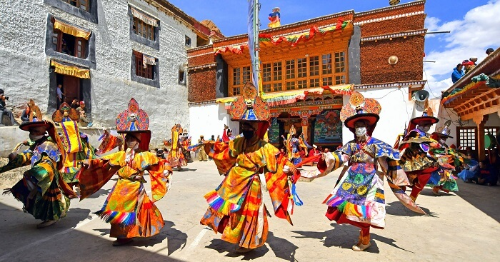

History of Jammu And Kashmir
Jammu and Kashmir, union territory of India (until October 31, 2019, a state), located in the northern part of the Indian subcontinent centred on the plains around Jammu to the south and the Vale of Kashmir to the north.
The union territory is part of the larger region of Kashmir, which has been the subject of dispute between India, Pakistan, and China since the partition of the subcontinent in 1947. Legislation passed in August 2019 set the stage for downgrading Jammu and Kashmir from statehood to union territory status and splitting off a part of it, known as the Ladakh region, into a separate union territory.
Jammu and Kashmir, formerly one of the largest princely states of India, is bounded to the east by the Indian union territory of Ladakh, to the south by the Indian states of Himachal Pradesh and Punjab, to the southwest by Pakistan, and to the northwest by the Pakistani-administered portion of Kashmir.

Mrs. Mehbooba Mufti
Chief Minister Of Jammu and Kashmir
CULTURES
The culture of Kashmir is a blend of multiple customs and came from Northern India, Northern Pakistan and the Chinese territory of Aksai Chin.
One of the most known dance form in all the regions of Jammu and Kashmir is 'Rouf; which is generally pronounced as 'ruf' in villages and as 'row' in cities.
Jammu region is mainly Hindu and Sikh-based while Ladakh and Leh are predominantly Buddhist-dominated. you can see Persian and Central Asian influences predominating this region and its people as can be seen in sufi music, dances, carpet weaving and in shawl making.


Wular Lake
locted in Jammu and kashmir , India
FAMOUS PLACES:
Yusmarg

Gulmarg

Sonmarg

Pahalgam

Gurez Valley

Verinag

Srinagar

FESTIVLAS
Kashmir is known as the paradise on Earth and rightly so. It has its charm in the enchanting valley views and green nature, but its festivals add an extra flavour to the beauty of the state.
- Urs
Eid Ul Fitr is celebrated on the last day of a month-long fasting in Ramzan or Ramadan. Namaz is offered six times on this day and fast is broken with feasting.
- Eid ul Azha and Eid ul Fitr
The two most important festivals of Muslims are celebrated in Kashmir in the full-fledged extravaganza. Kashmir being the Muslim majority region, Muslim festivities witness a huge participation.
- Hemis Festival
Hemis Gompa is the largest and richest monastery in Kashmir, located in Ladakh where Hemis is celebrated with full pomp and show. This day is declared as the state holiday.
- Baisakhi
Baisakhi is celebrated throughout the country on the 13th of April and is a prominent festival of the Sikhs. The day is celebrated as the New Year by Sikhs in India.
- Tulip Festival
With hundreds of Tulip Gardens in all of Kashmir, the state flourishes with Tulips during the spring season. With the largest Tulip Garden in Asia in its bounty, Srinagar plays host to the great Tulip Festival every year.
- Shikara Festival
The lifeline and identity of the Dal Lake in Kashmir, Shikara needs to be celebrated once in a year. To promote tourism, Kashmir's government began this festival in 2016.
- Gurez Festival
Around 123 km from the capital of Kashmir, Gurez is the placid valley in the Himalayas at an elevated height of about 8,000 feet. The picturesque valley has a plethora of scenic views as it lies on the ancient Silk Route.